2. Traitement des données de RNA-seq
Compte rendu des résultats
Je vous demande de m'envoyer en message direct dans Slack à la fin de la scéance le cahier de manipulation électronique (fichier texte anonymisé) dans lequel sont décrites les étapes que vous avez effectuées pendant ce TP. L’objectif est que la personne qui va relire ce document soit capable de reproduire ce que vous avez fait et obtenir les mêmes résultats que vous.
Objectif
Le but de cette séance de Travaux Pratiques, est de regarder l’expression différentielle des transcrits en condition GLKD en comparaison avec la condition WT.
Les questions posées tout au long de cette page sont là pour vous guider dans votre analyse, pour vous aider à comprendre ce que vous faites et ainsi mieux appréhender vos résultats. Les réponses que vous donnerez dans votre cahier seront aussi utilisées pour l’évaluation de votre travail. Pensez également à bien jusitifier les choix que vous faites.
Vous allez partir de l'historique que vous avez créé où se trouve les données de séquençage des ARN WT et GLKD.
Vous pouvez retrouver les noms des deux échantillons sur lesquels vous aller travailler dans le tableau partagé accessible en ligne.
Les librairies ont été préparées à l'aide du protocole RNA RiboZero Stranded d'Illumina. Ce protocole utiliser une méthode de déplétion ribosomique et pas de purification polyA.
Contrôle qualité des lectures
Comme dans la partie sur les petits ARN, regardez les résultats du contrôle de qualité effectué par FastQC sur les fichiers fastq pour les 2 échantillons.
Reportez le "nombre lectures totales" et le "%GC" dans le tableau partagé.
Questions
- La qualité des lectures permet-elle de poursuivre vos analyses ?
- Pouvez-vous observer des biais particuliers à prendre en compte pour la suite ?
Alignement des lectures sur le génome de la drosophile
Vous allez utiliser bowtie pour réaliser l’alignement des lectures obtenues sur le génome de la drosophile. Le but ici est d’obtenir plus de lectures qui s’alignent car les fragments sont plus longs que pour les petits ARN.
Documentation du logiciel bowtie
Question
- Quels sont les paramètres et les options que vous choisiriez pour obtenir le plus de lectures qui s'alignent afin de compter le nombre de transcrits en évitant les ambiguïtés ?
Test des paramètres d'alignement
Ouvrez le tableau partagé dans une nouvelle fenêtre de votre navigateur. Rendez-vous dans l'onglet "Test alignement RNAseq".
Vous allez lancer deux alignements sur les jeux de paramètres indiqués dans le tableau. Le premier en tant que testeur, le second en tant que relecteur.
Vous allez travailler sur l'échantillon Test Mapping présent dans votre histoire.
Vous allez utiliser l’outil Map with Bowtie for Illumina sur les données brutes de l'échantillon Test Mapping en alignant les lectures sur le génome de référence de la drosophile pour tester différents paramètres d'alignement.
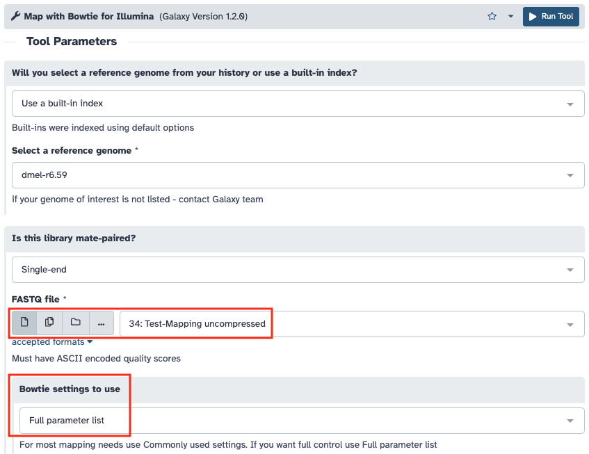 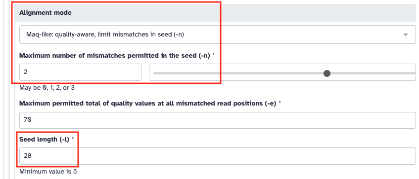 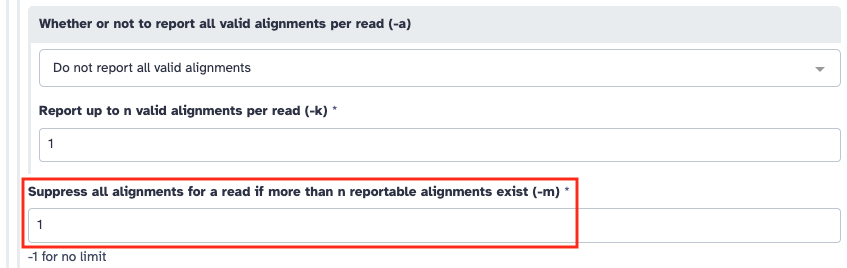 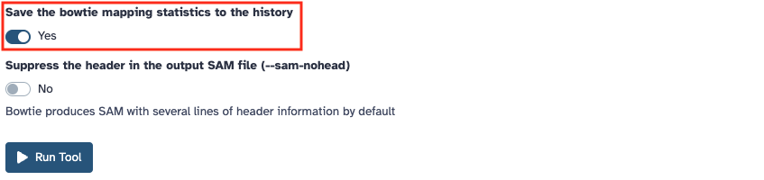
Une fois l'alignement effectué, indiquez le nombre, le pourcentage de lectures alignées et le temps mis par le programme à s'exécuter dans l'onglet "Test alignement RNAseq" du tableau partagé sur la ligne des paramètres dont vous avez la charge en tant que testeur. Vérifiez que vous obtenez les mêmes résultats que ceux indiqués par le testeur dans la ligne où vous êtes le relecteur.
Les paramètres de lancement du job sont accessibles dans Galaxy. Pour cela vous devez cliquer dans votre jeu de données sur l’icône d’information (i). La page qui s’affiche vous donne accès aux paramètres de lancement de l’outil utilisé.
Question
- Suite à ces tests quels sont les paramètres que vous allez choisir pour aligner vos échantillons ?
Reporter ces paramètres dans l'onglet "ARN" du tableau partagé.
Attention
Les paramètres choisis doivent être identiques pour tous les échantillons !
Alignements des lectures des échantillons GLKD et WT
Maintenant que vous avez déterminé les options qui vous paraissent les plus pertinentes à utiliser, lancez l’alignement de votre collection de vos deux échantillons d'ARN à l'aide de l’outil Map with Bowtie for Illumina.
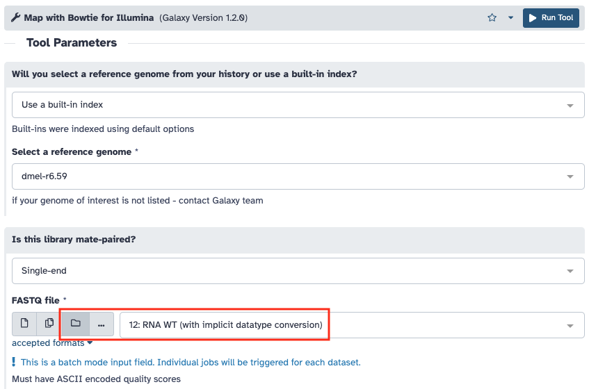
Reportez le "nombre d'alignements" et vos paramètres dans le tableau partagé.
Attention
N'oubliez pas de cocher l'option "Save the bowtie mapping statistics to the history" pour récupérer les informations de l'alignement !
Conversion des fichiers SAM
Vous allez effectuer la conversion des fichiers SAM en BAM en éliminant les lectures qui ne se sont pas alignées, puis en triant les alignements suivant les coordonnées chromosomiques du génome de référence. Cette étape permet non seulement de réduire la taille du fichier d'alignement mais aussi de faciliter sa lecture par les navigateurs de génome (Genome Browser).
Pour cela vous allez utiliser l’outil Samtools view.
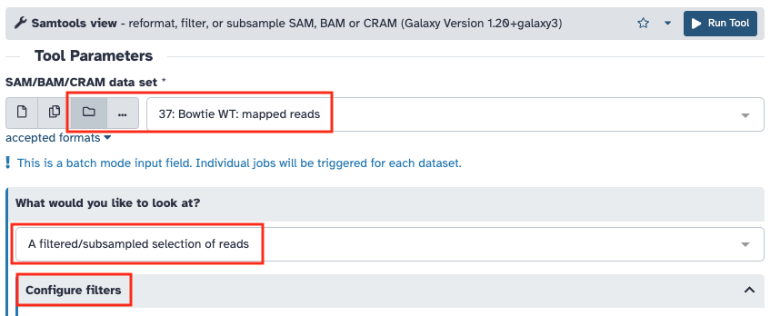 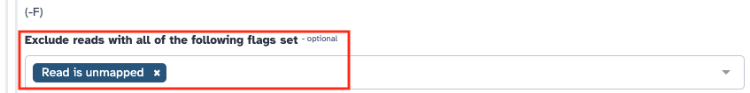
Mesure des niveaux d'expression
Afin de déterminer la couverture en lectures de chacun des gènes de la drosophile, vous allez utiliser l’outil featureCounts dont la documentation est disponible en ligne.
Mais avant vous devez copier le fichier d’annotation du génome de la Drosophile au format GTF depuis l'historique "References" comme indiqué en annexe .
Le format GTF/GFF
Le format GTF/GFF est un format de fichier standard utilisé pour stocker les informations d’annotation d’un génome dans un fichier texte. GTF signifie Generic Transfer Format. Les fichiers GTF sont des fichiers tabulés de 9 colonnes contenant du texte simple. Les spécifications détaillées de ce format sont disponibles en ligne.
Le décompte des alignements va se faire sur le fichier BAM filtré et trié que vous avez généré à l’étape précédente. Pour cela vous utiliserez l’outil featureCounts installé dans Galaxy en sélectionnant "Stranded (Reverse)".
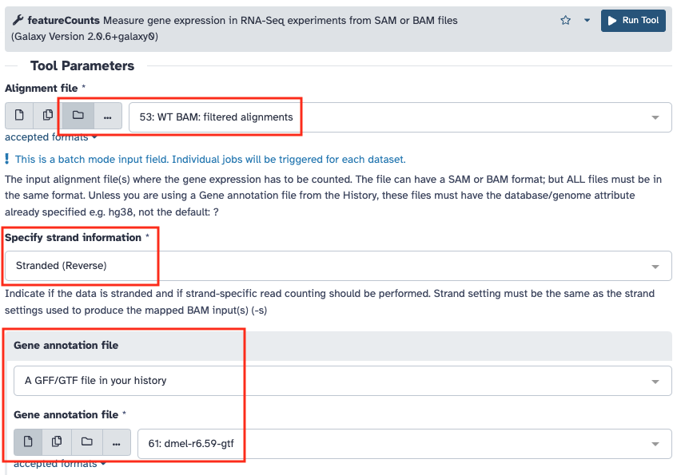
Reportez le "nombre de lectures comptées" dans le tableau partagé.
Analyse différentielle
Vous allez maintenant comparer les niveaux d’expression des gènes entre vos 2 conditions à l’aide des 3 réplicats de chaque condition. Pour cela vous devez d’abord récupérer les fichiers de comptage des autres échantillons qu’il vous manque.
Attention
Pour que l'analyse fonctionnelle marche, vous devez récupérer les résultats de comptage dont l'alignement a été effectué avec les mêmes paramètres que les votre. Si vous ne le faite pas vous risquez une confusion des effets au moment de l'analyse statistique.
Ensuite vous allez utiliser l’outil DESeq2 pour effectuer l’analyse différentielle. Il se base sur le package R DESeq2.
Attention
Les fichiers qui sont dans vos collections ne sont pas visibles de la même façon que ceux qui vous avez récupérés. Reportez vous aux annexes pour savoir comment extraire les éléments d'une collection.
Le mieux est de créer 2 nouvelles collections "featureCounts", l'une pour les échantillons WT et l'autre pour les GLKD.
Vous devez indiquer à l’outil quels sont les échantillons à rattacher à chaque condition (facteur), puis lancer l’analyse.
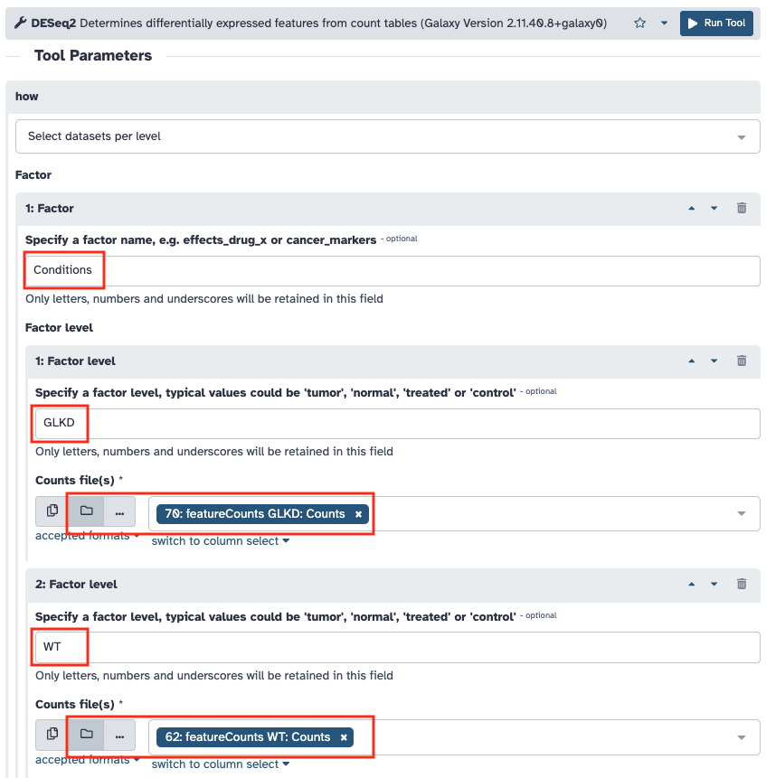 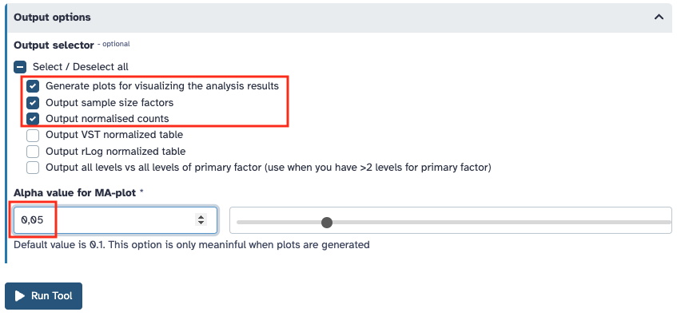
Questions
- En regardant les graphiques de diagnostique, détectez-vous un problème lors de l’étape d’analyse différentielle ?
Si vous avez envie d'aller plus loin avec la visualisation des données sur le MA-plot, l'outil ggmaplot permet dans R d'afficher des annotations sur la graphique.
Estimation de la dispersion dans DESeq2
Si vous avez envie de mieux comprendre comment DESeq2 estime la dispersion pour mesurer la différence d'expression, cette vidéo détaille le processus.
Visualisation sous forme de volcano plot
Pour aller plus loin dans la visualisation vous allez réaliser un volcano plot sur vos résultats grâce à l'outil Volcano Plot. Attention à bien faire correspondre les colonnes demandées au format de sortie de DESeq2.
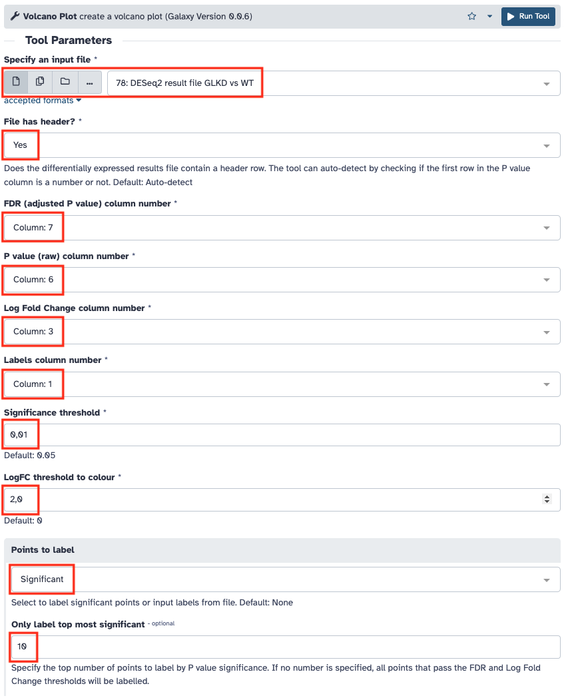
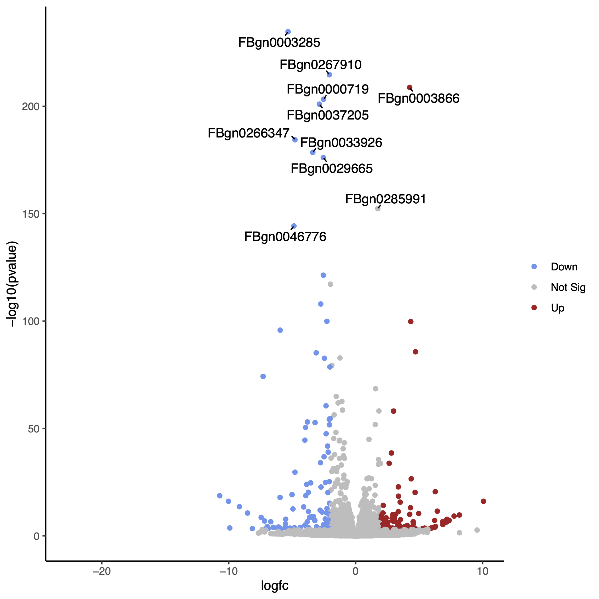
Un tutoriel très bien fait vous permet d'aller plus loin avec cet outil.
Par exemple voici comment visualiser sur le volcano plot la liste des gènes cibles des amorces que vous avez utilisés en qPCR.
Pour récupérer cette liste, cliquez sur le menu "Upload Data", puis sur le bouton "Paste/Fetch Data" donnez le nom "Cibles PCR" à la place de "New File". Indiquez "tabular" pour type de données. Pour finir cliquez sur le bouton "Start".
Voici la liste des gènes à copier :
FlyBase ID
FBgn0000179
FBgn0000459
FBgn0002522
FBgn0026411
FBgn0003866
FBgn0002626
FBgn0037703
Pour information, voici la liste des noms de gènes associés aux Gene ID que vous avez chargé dans votre histoire :
| FlyBase ID | Gene name |
|---|---|
| FBgn0000179 | bi |
| FBgn0000459 | disco |
| FBgn0002522 | lab |
| FBgn0026411 | Lim1 |
| FBgn0003866 | tsh |
| FBgn0002626 | Rpl32 |
| FBgn0037703 | Kdm3 |
Attention
Copier bien la première ligne d'en-tête sinon le premier gène de la liste n'apparaîtra pas sur le volcano plot.
Relancez l'outil Volcano Plot avec les réglages ci-dessous.
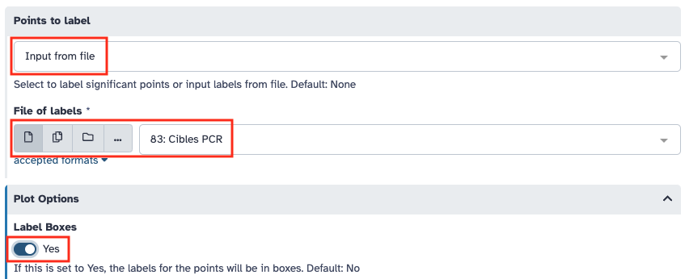
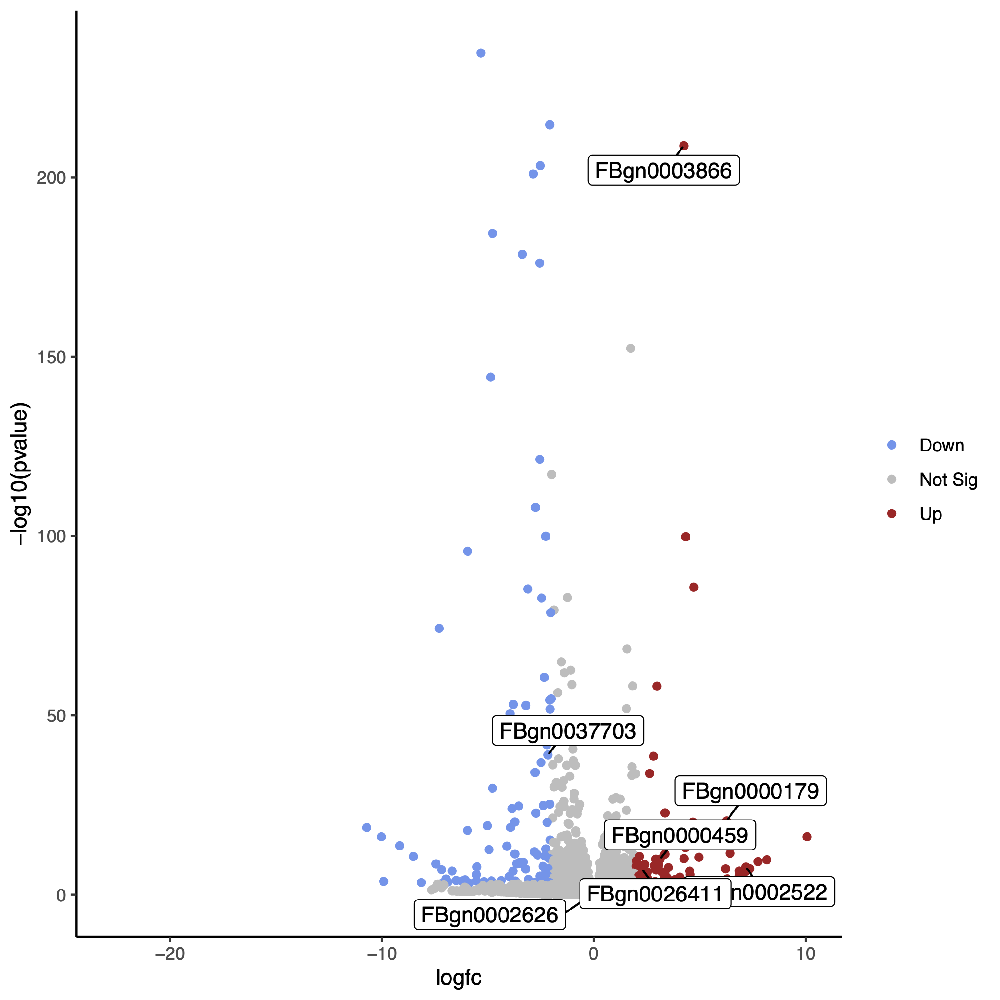